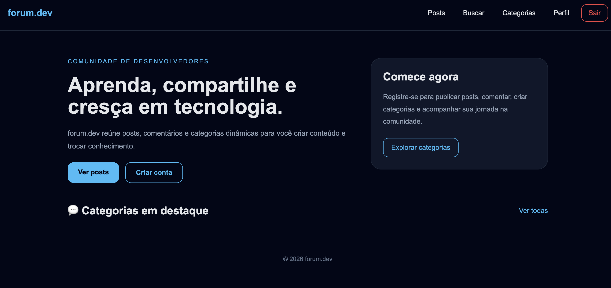
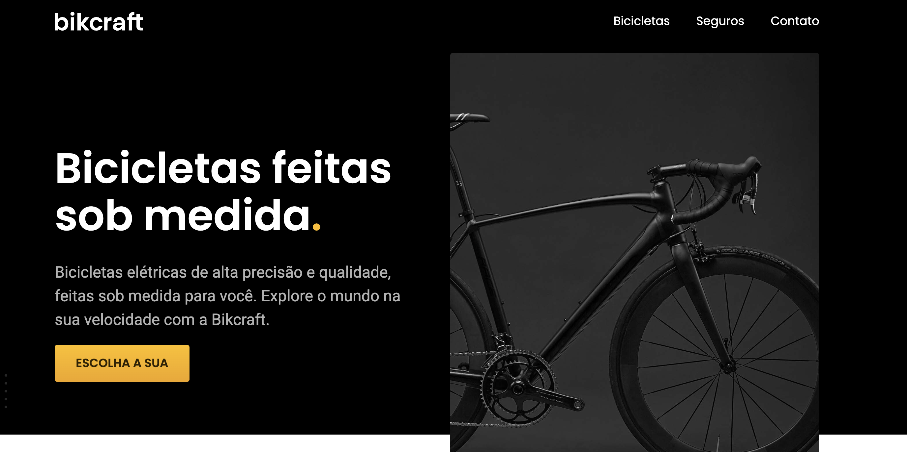
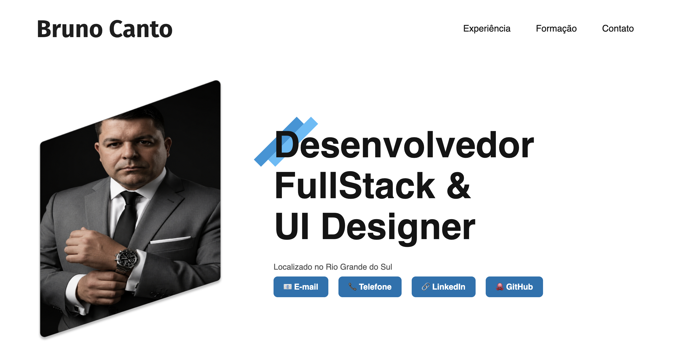
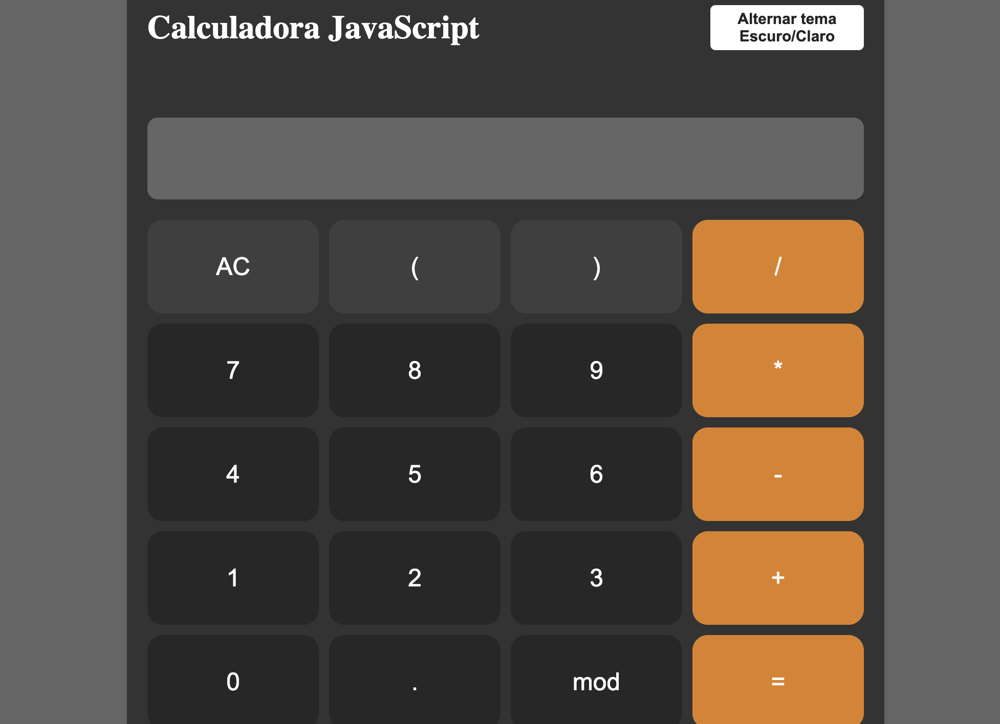
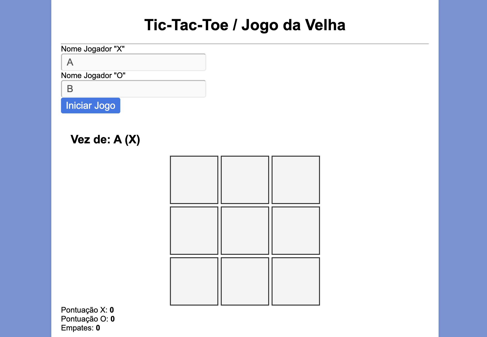

01
RJ Rastreadores
Projeto para cliente
Landing page desenvolvida para um cliente real do setor de rastreamento veicular de frotas.
Sou Bruno, desenvolvedor de Alegrete, no Rio Grande do Sul. Minha trajetória nasceu na oficina, entre máquinas, medidas e prazos. Passou pela gestão de negócios e hoje ganha forma em código.
Carrego comigo o que aprendi no chão de fábrica: atenção aos detalhes, disciplina e foco no que importa — entregar valor de verdade.
Minha jornada é marcada por um desejo constante de aprender, me reinventar e contribuir para projetos desafiadores como desenvolvedor fullstack.
Minha trajetória passa por tecnologia, gestão empresarial e indústria metalúrgica — sempre buscando agregar valor através de inovação, planejamento estratégico e otimização de processos. Hoje, na Btech, atuo como técnico eletrônico e na manutenção de iPhones, enquanto me dedico à transição para o desenvolvimento de software. Em cada desafio, me comprometi com a entrega de resultados e a melhoria contínua, alinhando soluções técnicas à eficiência operacional.
Passei por diferentes áreas e desafios sem perder o foco no resultado, me adaptando ao que cada momento exigia.
Transitei entre usinagem, gestão comercial e tecnologia, absorvendo rápido o que cada contexto pedia.
Documentação clara, alinhamento com times e entregas bem explicadas fazem parte de como eu trabalho.
Da oficina aos squads de desenvolvimento, sei que os melhores resultados vêm de colaboração real.
01
Transformo ideias em aplicações robustas, escaláveis e bem estruturadas.
02
Modelagem, consultas e performance para dados que fazem sentido.
03
Processos mais inteligentes para ganhar tempo e reduzir erros.
04
Visão de gestão para conectar tecnologia ao resultado do negócio.
2025 — atual
Técnico e Desenvolvedor
Manutenção de iPhone e eletrônica, com automação de rotinas de atendimento e controle de ordens de serviço.
2024
Desenvolvedor
Desenvolvimento inicial de aceleradores tecnológicos, junto à equipe técnica, com documentação de processos e comunicação técnica.
2023
Trainee Front-end e Blockchain
Trilha de aprendizado em Blockchain, com desenvolvimento de projetos e APIs REST.
2021 — 2023
Medição, orçamentos e pedidos
Responsável por medição, orçamentos e pedidos de materiais, garantindo precisão no atendimento às demandas comerciais.
2015 — 2021
Programador e operador CNC
Otimização de processos produtivos, com alta exigência técnica e atenção aos detalhes.
Pós-graduação em Engenharia de Software
PUC Minas
Tecnólogo em Análise e Desenvolvimento de Sistemas
Instituto Federal Farroupilha
Técnico em Fabricação Mecânica
SENAI
Técnico em Gestão Empresarial
CDC
Projeto para cliente
Landing page desenvolvida para um cliente real do setor de rastreamento veicular de frotas.

Projeto pessoal
Fórum para discussão sobre programação e tecnologia, com sistema de posts e interações entre a comunidade.

Frontend
Projeto web Bikcraft, com versão online disponível para explorar.

Projeto pessoal
Meu currículo online, com minha trajetória profissional, formação e habilidades.
TCC · Sistema web
Sistema web para gestão de prontuários de pacientes do Centro de Atenção Psicossocial Infantojuvenil (CAPSi).

Frontend
Calculadora online desenvolvida em JavaScript.

Frontend
Jogo da velha interativo implementado com HTML, CSS e JavaScript puro.
Trabalho em equipe
Projeto desenvolvido em equipe ao final do estágio de bolsa da Compass UOL.
Projeto acadêmico · Simulação
Simulador visual para comparar estratégias de empacotamento de itens, acompanhar algoritmos passo a passo e analisar o uso das caixas, o desperdício de espaço e o tempo de execução.
Estou aberto a projetos, oportunidades e boas conversas sobre software. De Alegrete para onde o trabalho precisar.
Enviar um e-mail →